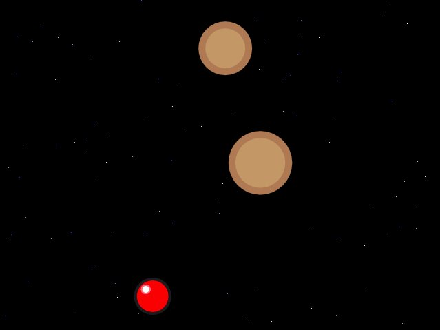
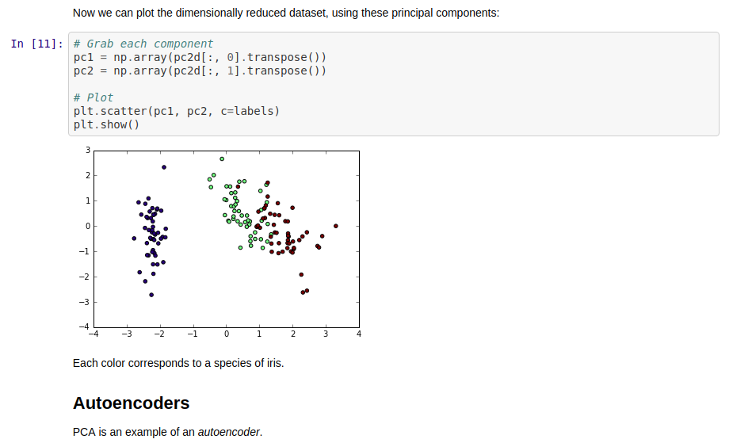
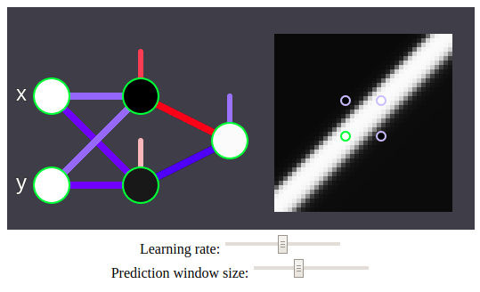

Tweet sentiment analysis

Sentiment analysis for Barack Obama's tweets while POTUS. Made in R using shinyapps.io.
MobileMeteor
A browser game using your web cam for controls. The ml5js library is used to use a mobilnet for image regression through transfer learning.
Principal Component Analysis and autoencoders
A Python implementation of PCA and neural net autoencoders made from scratch. Got second place in one of Siraj Raval's coding challenges.
Learning XOR
Exclusive or - or XOR for short - is well know not to be linearly separable, and so a non-linear model is needed. Here, a simple neural network is used. This simulation visualizes the evolution of the weights in the model under gradient descent.